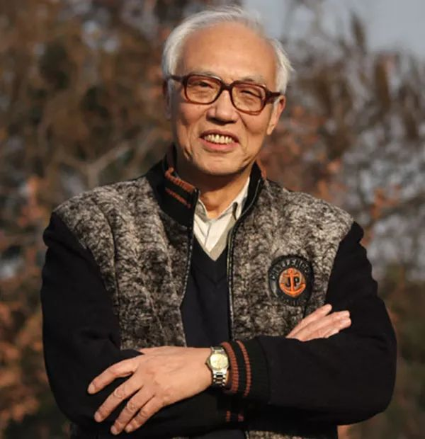

在疫情中消失的1665颗星：医生、院士、前市长、画家、诗人、健美冠军…
原文链接 备份链接 来源 | 潇湘晨报（xxcbwx）综合 2月15日24时，疫情已让1665人的生命永远停滞。 他们是谁？ 化身为一个个死亡数字，串成了历史的链条，可他们的故事大多数不被记录，无从知晓。 但有一些人，身处不同的领域，曾在 …
澎湃新闻记者 邓雅菲
据@光明日报 消息，中国工程院院士、华中科技大学机械科学与工程学院教授、制造装备数字化国家工程研究中心首席科学家、机械制造与自动化专家段正澄，因病于2020年2月15日在武汉去世。
公开资料显示，段正澄院士是机械制造与自动化（加工技术和装备）专家。汉族，中共党员，江苏省镇江市人，机械制造与自动化专家。1957年毕业于华中工学院（现华中科技大学）机械系，后留校工作至今，长期从事机械制造与自动化学科的教学与科研工作。他一直工作在一线，与生产紧密结合，致力于国家重要需求的自动化、数字化加工技术与装备的应用基础研究和工程技术研发。现为华中科技大学机械学院教授、博士研究生导师、制造装备数字化国家工程研究中心首席科学家。
段正澄先后获得1978年全国科学大会奖2项、国家科学技术进步一等奖1项、二等奖3项；省部级科学技术进步特等奖1项、一等奖7项、二等奖4项；2011年获湖北省科学技术突出贡献奖；发表论文200余篇。先后被评为全国优秀教师、湖北省劳动模范、湖北省先进教育工作者和湖北省先进科技工作者。他所领导的教学与科研团队，1993年被评为全国先进集体，并获得“五一”劳动奖状。
2009年当选为中国工程院院士。

中国工程院院士、华中科技大学机械科学与工程学院教授段正澄。 华中科技大学 资料图
搞科研要经得起“脉冲”
段正澄院士将毕生的精力奉献给了国家科技事业。
六十多年来，他坚持深入一线企业合作，以机械制造及自动化学科为基础，面向国家重大需求，开展多学科交叉与集成，进行高端装备的创新研究和工程化开发，研发了多台（套）国际、国内首创的高端自动化装备、并在湖北实现了产业化。
2009年，75岁高龄的段正澄获选为中国工程院院士。据《楚天都市报》此前报道，曾经有人鼓励段正澄参选院士，他却拒绝了。老人把“院士”的头衔看得极淡，在他看来，扎扎实实搞科研才是自己兴趣所在。
“从事科学研究也许十年二十年都不会有什么大的成果，因此绝不能浮躁，不能急功近利。选准了目标，就要长期坚持，百折不挠。只有这样，才能出成果，出大成果。”对于坚持的意义，段正澄有着特别深刻体会，他形象地说：“做研究要耐得住寂寞，不能外面来一个脉冲，自己就要震荡。”
段正澄院士为湖北的经济发展、科技进步以及人才培养做出了突出贡献。
在2011年度湖北省科技奖励大会上，获湖北省科学技术突出贡献奖的段正澄院士平静地说，“我将以诚惶诚恐之心对待这次的荣誉，以兢兢业业之心对待今后的工作。”
“这里有我栽下的树，还有影响我一生的师长”
1953年，19岁的段正澄成为华中工学院（现华中科技大学）成立后招收的第一届大学生，1957年毕业留校任教，从此扎根喻园，一呆就是60多年。他曾说，“这里有我栽下的树，还有影响我一生的师长”。
据《武汉晚报》此前报道，20世纪50年代的华中工学院初建阶段，段正澄和同学都要在节假日参加基建工作，常常是上午种树，下午在工地当小工，“现在的东二楼东三楼都有我挑过的砖。把一个大食堂用砖头分成许多格，每格就是一间教室。”
回忆起这段建校岁月，段正澄感慨地说：“虽然生活艰苦，但很磨练人的意志。而且正是因为亲自参与了，所以有着特别的荣誉感，愿意为学校的发展壮大作出自己的努力。”
母校团结、和谐的环境和氛围一直是段正澄最留恋的地方，“1953年的华中工学院是由数所学校的一些专业合并而成的。从建立起，学校领导就非常注重营造一种团结、协作的氛围。虽然教师们来自不同学校不同专业，但相互之间的那种关心互助，深深影响了我们那群学生。人心齐，泰山移，这是一片造就人才、成就事业的沃土。”
据华中科技大学官网资料介绍，段正澄在华中科技大学任教期间，先后获1978年全国科学大会奖2项、国家科技进步二等奖3项；省部级一等奖5项、二等奖4项；发表论文217篇，三大索引收录78篇；主编《光机电一体化手册》，参编《机械工程手册》，编写教材4本；获授权专利19项(发明专利5项)。
大师远去，荣光犹存。
本期编辑 常琛
推荐阅读


原文链接 备份链接 来源 | 潇湘晨报（xxcbwx）综合 2月15日24时，疫情已让1665人的生命永远停滞。 他们是谁？ 化身为一个个死亡数字，串成了历史的链条，可他们的故事大多数不被记录，无从知晓。 但有一些人，身处不同的领域，曾在 …
原文链接 备份链接 以下文章来源于DT财经 ，作者持续更新的DT君 [DT财经 第一财经旗下数据研究型新媒体，用大数据解读消费社会和商业图景，连接数据、机构和人群。](#) 15.02.2020本文字数：2814，阅读时长大约5分钟 导 …
原文链接 备份链接 《中国经济周刊》记者 谢玮丨北京报道 2月13日，据新华社消息，日前，中共中央决定：应勇同志任湖北省委委员、常委、书记，蒋超良同志不再担任湖北省委书记、常委、委员职务。 同日，马国强不再担任湖北省委副书记、武汉市委书 …
原文链接 备份链接 *************▲*************2月2日，武汉大学中南医院影像科主任徐海波教授（白衣者）和同事查看患者的CT检查影像。 （新华社/图） 全文共1150字，阅读大约需要3分钟。 武汉确诊患者单日 …
原文链接 备份链接 岛语 非常时期，武汉成了全国人民挂念、祈福的城市。封城后，武汉人民的真实生活是什么样？ 正和岛自1月26日起特别推出《叶青：我在武汉疫区的第N天》专栏。叶青是一位定居武汉40年的市民，也是一名学者和官员。接下来的一段时 …